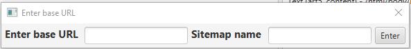
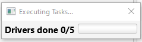

This window displays all created sitemaps in the list on the left. Selecting a sitemap from the list displays all tasks contained in the sitemap in the list on the right.
The box at the bottom displays the data collected if the scraper has been run using this sitemap.
New sitemaps can be created by pressing "New", and sitemaps can be edited by pressing "Edit". Sitemaps can also be deleted and saved using "Save" and "Delete".
If you want to run or schedule a sitemap, press "Run" or "Schedule" while having a sitemap selected.
When you create a new sitemap, you have to enter the base URL and name. The base URL is the URL that all tasks in the sitemap will start from.

This window displays the tasks that are in the sitemap. Tasks can be created or edited by pressing "New" or "Edit" while a task is selected in the list.
Tasks can also be deleted from the sitemap by pressing "Delete"
This window allows you to create Tasks.
At the top you can select the type of task you want to create. "Text" tasks extract and collect text from elements on the page,
"Click" simulates a mouse click on an element on the page, and "Navigate" allows you to navigate the scraper to a new URL.
Clicking on "Select Element" and then clicking on the webpage allows you to select that element. The element will by highlighted and the xPath field will be filled with the path to that element.
If you want to select other elements connected to the currently selected element, you can use the other "Select" button to select all the elements in the current element,
all elements in the same parent element as the currently selected one, and the element the contains the current element. You can also press the "<-" to navigate back on step in the webpage history.
If you want to add a task with the currently selected options, press "Add Task" to add it to the sitemap. Press "Remove Task" to remove the latest task from the sitemap.
When you are done with adding tasks, press "Save Chain" or close the window to save the task in the sitemap.
You can access the settings from the "File" menu in the starting window of the application.
If you are going to store the data locally on you computer, you can specify the storage location by pressing "Open" and navigating to the desired directory.
If you want to store the data on a MongoDB database, paste the connection string into the field and press "Connect". If the connection string is correct, the text next to the button will turn green.
You can select what web driver to use from the dropdown menu. If you want to download more drivers, click on the link which will take you to a page with download links.
Remember that the driver version you download must match the version of the same browser you have installed.
After the download is finished, press the "Place drivers here" to open the directory where you should place the driver files.
If you want to speed up the scraping, you can increase the amount of drivers that can run at the same time by moving the slider.
Keep in mind that more drivers running at the same time results in more memory and CPU usage. The maximum number of drivers you can select is limited by your computer's logical cores.
If a sitemap only contains a few number of tasks, increasing the number of drivers will have no effect, since a task cannot run on two drivers at the same time.
You can specify if you want to store the data locally, on a database, or both, by click the "Local Storage" and "MongoDb" buttons.
You can choose between storing the data as a .json or .csv file by using the dropdown menu.
If you have provided a connection string and connected to MongoDB in the settings, you can specify which database and collection to store the data in.
You can also remove all the data that was previously in the connection be enabling the right button
If you are scheduling the scraping, you can select the date and time using the controls.
Start/schedule the scraping by pressing the "Run"/"Schedule" button.
While the scraper is running, a progress window is displayed. The amount of drivers currently running and how many has finished scraping is displayed until the scraping is done.

Once the scraping is done, the results window opens. In this window you can see how much data was scraped and how long the scraping took.
You can also choose individual tasks from the list and see the data and time amount for each of them aswell.
If a task failed for some reason, it will have the text "[Failed]" at the end, so that you know that something went wrong.
At the bottom are two pie charts that display how much data each task scraped and the duration of each task.